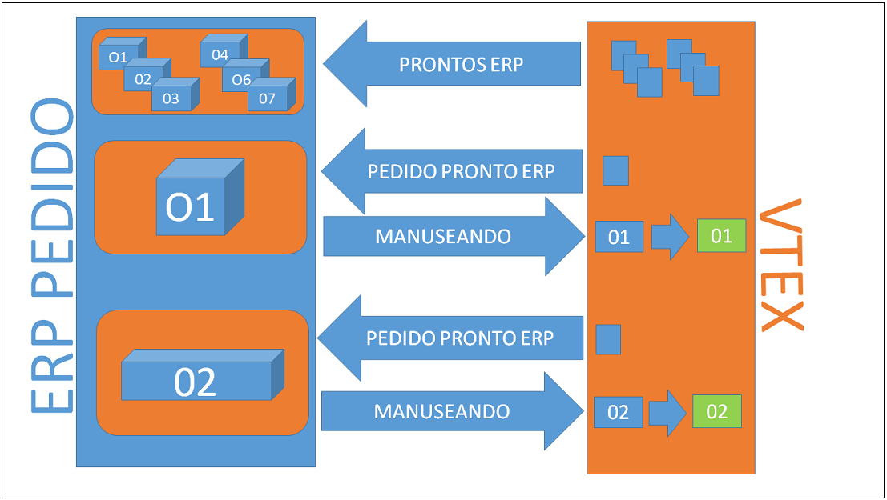
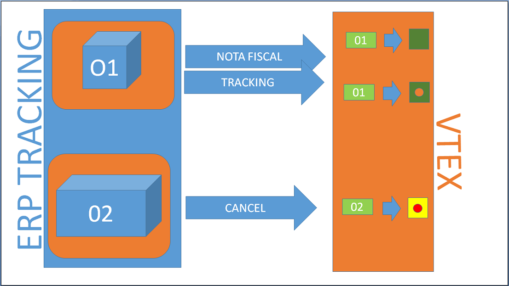

Este documento tem por objetivo auxiliar na integração de pedidos entre uma loja hospedada na versão smartcheckout da VTEX com o ERP. O fluxo consiste em ler os pedidos prontos pro ERP na VTEX, inserir os pedidos no ERP, enviar para a loja na VTEX as informações de nota fiscal e tracking e ou cancelamento de pedido.
Obter a lista de pedidos prontos para o ERP na VTEX e inserir os pedidos no ERP, atualizando a VTEX que o pedido já está no ERP.
Fluxo:

Através da API do OMS pegar a lista de pedidos prontos para o ERP paginados:
[Developer] - Exemplo de chamada para obter uma lista de pedidos por status
Esse exemplo retorna uma lista com o resumo de cada pedido, onde para cada pedido, deve se fazer uma chamada na API REST do OMS para pegar o pedido completo passando o "orderId" do pedido.
Através da API do OMS pegar um pedido pelo identificador:
[Developer] - Exemplo de chamada para obter um pedido pelo identificador.
Caso necessário obter dados possíveis de transação de pagamento de um pedido (como endereço de cobrança por exemplo), deve se acessar a API REST de Payments passando o *TID ("paymentData.transactions.transactionId": "33CD3CC4D11A4FA49A2C9EE20D771F98") do gateway VTEX.
No retorno, além de um resumo da transação, poderá obter se as URLs de acesso aos detalhes transação.
[Developer] - Exemplo de chamada para obter dados possíveis de transação de pagamento de um pedido
Uma vez tendo os dados de pedidos obtidas na API do OMS da VTEX, persiste se o pedido no respectivo ERP e informa se a VTEX que o pedido está sendo tratado pelo ERP.
[Developer] - Exemplo de chamada para avisar OMS que o pedido já se encontra no ERP
Uma vez o pedido no ERP e o status do pedido na loja VTEX como preparando entrega, vem a parte da Nota Fiscal e do Rastreamento de Entrega.
Fluxo:

Após receber o pedido, o ERP emite a nota fiscal do pedido e informa a loja VTEX sobre a mesma.
O envio de notas fiscais pode ser parcial, obrigando assim ao enviador informar além dos valores da nota fiscal, os items que está mandando na nota fiscal parcial.
[Developer] - Exemplo de chamada para enviar Nota Fiscal para o OMS
Uma vez informado a Nota Fiscal, vem a parte de rastreamento da entrega. O ERP ou a transportadora podem enviar informações de rastreamento do pedido através da API do OMS VTEX.
[Developer] - Exemplo de chamada para enviar Tracking de Entrega para o OMS
A Nota Fiscal e o Tracking podem ser enviados na mesma chamada, basta preencher todos os dados do DTO (objeto de transporte) do POST.
O pedido desceu pro ERP, mas por algum motivo foi cancelado. O ERP invoca uma solicitação de cancelamento para a API do OMS da loja VTEX. Caso o pedido ainda esteja num estado em que se possa cancelar, o mesmo será cancelado. Um pedido só será cancelado caso ainda não tenha Nota Fiscal.
[Developer] - Exemplo de chamada para solicitar cancelamento no OMS
autor:Jonas Bolognim
propriedade: VTEX